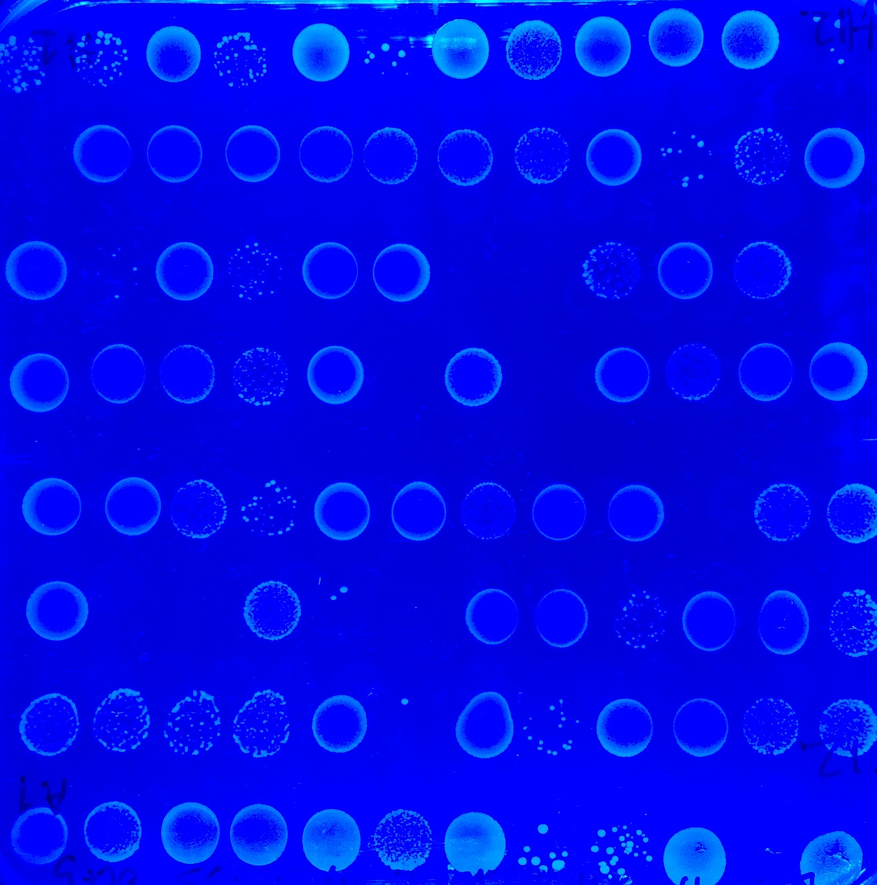
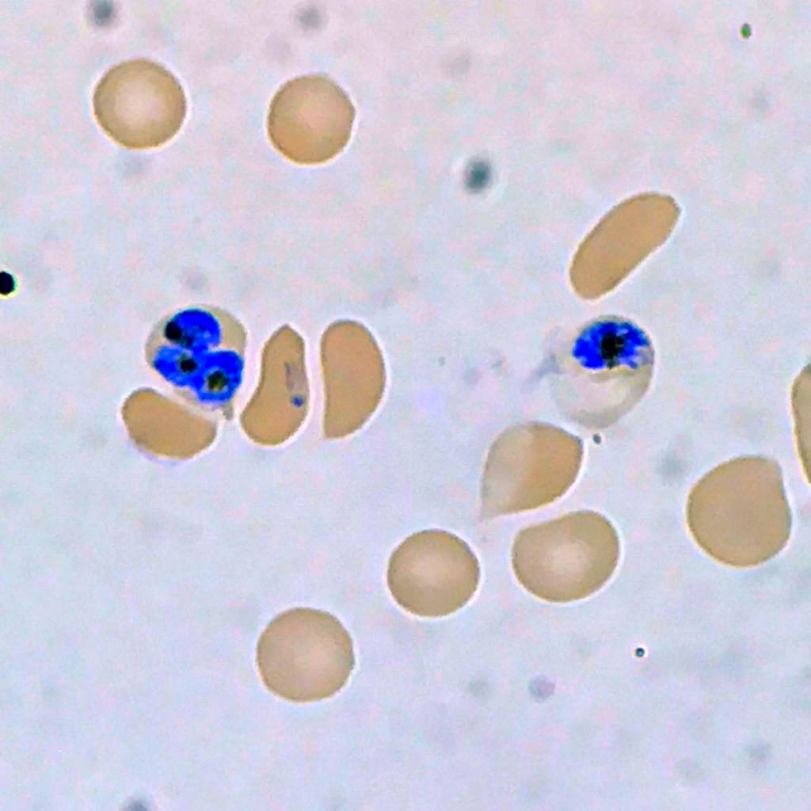
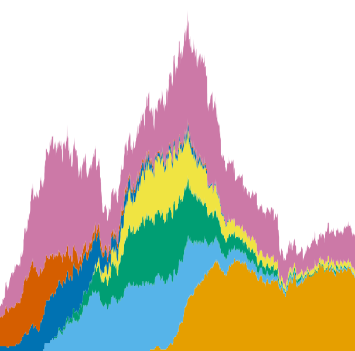
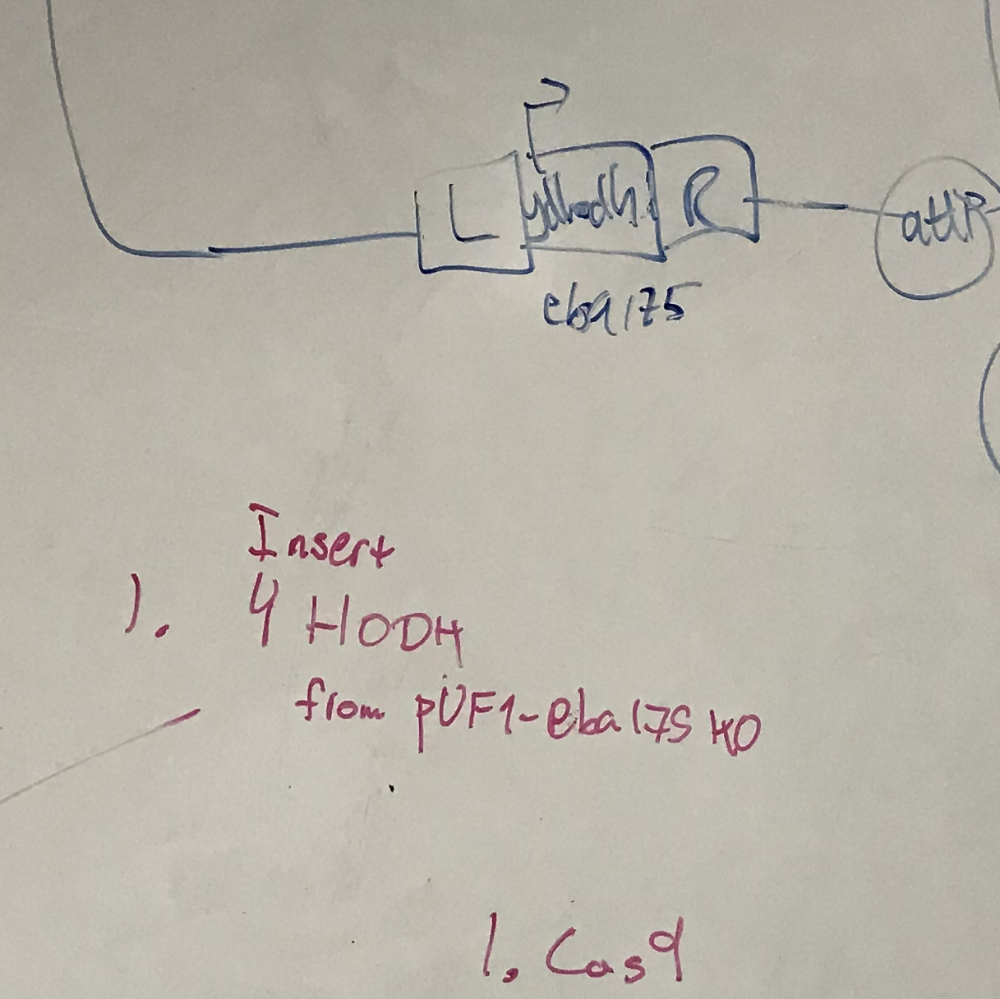

Science is inherently collaborative and context-embedded. It thrives on diversity, transparency, and education.
labSquared is an ongoing exploration of how academic research groups could function following these ideals. It is the handbook of an imaginary lab experimenting with ways of running itself: a laboratory laboratory.
I am not the first to think of many —perhaps any— of these proposals. But more importantly, the purpose is to build a repository of ideas and resources, a place to track, gather, and communicate these thoughts in. These can be starting points from which to trace courses in research, academic mentoring, science policy, science communication, and much more.

Controlling expression and genetic circuits
Our ability to understand and control disease depends on our ability to control the genes underlying it. Synthetic biology allows us to repurpose systems with unrelated biological functions into tools for manipulating gene expression.
My Ph.D. research with the Niles Lab at MIT focuses on developing these kinds of tools for use in the malaria parasite, Plasmodium falciparum. By combining recombinant gene expression systems, deep learning, and genetic screening, I try to understand how parasites control gene expression and how we can build synthetic ways of doing so.
Besides building tools to manipulate gene expression, it is important to understand how these tools function together. Genetic circuits exhibit context-dependent, emergent behaviors such as resource sharing, which complicate their use. In collaboration with the Del Vecchio lab at MIT, I helped assemble and model genetic devices to reduce these effects in model gene circuits [article].
Finally, I have built and modeled gene circuits for applications in new treatment strategies for bacterial disease, both as a member of Eligo Bioscience and in collaboration with the Collins lab at MIT [accepted].

Probing and targeting pathogen genes
We can use engineered control of gene expression and bioinformatics to tease apart how pathogens live and die. This knowledge opens new paths to approach drug and vaccine design in a more informed manner.
Despite still killing more than 400,000 people a year, 70% of P. falciparum genes have unknown or hypothetical functions. To remedy this, I develop computational tools to visualize gene interactions and design gene editing for assaying gene function at a massive scale, as a part of the Niles Lab [article]. In addition, I use statistical approaches to interpret protein-compound interactions in order to establish potential drug targets and lead compounds [in prep.].
Another situation where we need a better understanding of gene function is bacterial persistence, the phenomenon in which bacteria stochastically enter a metabolic state that allows them to survive an antibiotic, despite being genetically susceptible. As a part of the Paulsson Lab at Harvard Medical School, I used microfluidics and live cell microscopy to screen gene function related to persistence in Escherichia coli.

Understanding pathogen evolution
Understanding and predicting evolution can allow us to design drugs, vaccines, and public health policy that is more effective and robust. Achieving this requires new experimental, mathematical, and computational modeling tools.
Sequencing has revolutionized the study and management of infectious diseases. Despite the wealth of field data, we are missing tools with which to test hypotheses about genome evolution and epidemiology in a systematic manner. To address this, I am developing computational tools for simulating pathogen genetics and evolution in epidemiological models. I applied these tools to understand fundamental precepts in genomic epidemiology using small epidemiological simulations, in collaboration with Dr. Mauricio Santos-Vega [preprint].
South America has seen the worst increases in malaria cases of any continent over the last few years. The unique genetic makeup and slow-burning epidemiological dynamics of South American malaria raises questions about the evolutionary dynamics of the parasites it is caused by. As a member of an international work group of collaborators in Colombia, USA, and Europe, I help apply statistical methods to the genomic epidemiology of malaria along the Colombian Pacific coast [preprint].
The most common instance of resistance to treatment is antibiotic resistance in bacteria. Resistant bacteria in a biofilm may incur in fitness costs, and yet the benefits of resistance can often be shared among its neighbors. As a part of MTBI at Arizona State University, I co-developed a 3-D, spatially explicit agent-based model of bacterial resistance, to study spatial dynamics and competition within biofilms that can be harnessed to reduce resistance [technical report].
Phage therapy is an intriguing alternative to antibiotics, but is also subject to evolution of bacterial resistance. Although phage are capable of evolving too, this coevolution can be difficult to achieve. To make phage into effective therapeutic agents, we need ways of inhibiting bacterial evolution of resistance. At the CIMIC lab at Universidad de los Andes, I contributed to the development and validation of a dynamical model of phage therapy showing the potential of combining phage cocktails and antibiotics, even when the antibiotic is ineffective by itself [article].

Data Fellow – MIT Biological Engineering Data Lab
(Spring 2020++)
Providing 1-on-1 coaching to undergraduates, graduate students, and postdocs at MIT for designing and executing projects in computational biology and biological data analysis. Offering language-specific training and support in Python, MATLAB, R, and cluster computing.
Peer counsellor – MIT Biological Engineering REFS
(Spring 2019++)
We provide 1-on-1 confidential conflict coaching, workshops, and reference material for navigating grad school to peer graduate students at the MIT Department of Biological Engineering. We identify points of stress in the Ph.D. track and work with the MIT BE Graduate Student Board to improve faculty mentorship and the graduate experience.
Teaching Assistant – MIT Biological Engineering
(Fall 2019)
Part of the teaching team for the introductory graduate course 20.420 - Principles of Molecular Bioengineering, taught by Profs. Ernest Fraenkel and Alan Jasanoff. Topics include reaction kinetics modeling, protein thermodynamics and computational prediction, and systems-level models of metabolism. Assisted with designing and grading assignments and exams, providing review lecture sessions, and providing one-on-one tutoring for 40 students in the Biological Engineering, Chemical Engineering, and Health Sciences and Technology graduate programs. Also conducted a programming bootcamp session, with materials available here.
Teaching Assistant – Uniandes Biomedical Engineering
(Spring, Fall 2016)
Part of the teaching team for the second-year undergraduate courses Quantitative Human Physiology I and II, taught by Prof. Juan M. Cordovez. Topics include human anatomy and systems physiology as well as mathematical modeling of physiological processes. Assisted with designing and grading assignments and exams, providing review lecture sessions, and providing one-on-one tutoring for 100 students in the Biomedical Engineering undergraduate program. Also taught two main lectures during professor absences.
Teaching Assistant – Uniandes Student Affairs
(Fall 2015)
Part of the teaching team for Social Practice, an undergraduate course and outreach program taught by instructors David Parga and María del Pilar Pérez. Assisted with training, guiding, and evaluating 60 Uniandes undergraduate students of all majors and years serving as academic tutors for low-income high school students in Bogotá, Colombia.
Teaching Assistant – Uniandes Biological Sciences
(Spring 2015)
Part of the teaching team for the Parasitology Laboratory course, a second year undergraduate course taught by Prof. Camila González and instructor Laura Tamayo. Topics included anatomy, physiology, and cell biology of diverse human and animal parasites and tropical diseases, from roundworms to viral fevers. Assisted by providing review sessions and tutoring, helping develop and grade assignments, and preparing demonstrative microscopy slides.
You are welcome to
- hack my coding projects on GitHub
- engage with my science views on Twitter
- follow my research on LinkedIn and ResearchGate
- view my published work on Google Scholar and ORCiD
- download my CV
- reach out to pablocarderam@gmail.com
I love collaborating on projects or just hearing questions, suggestions, or thoughts!
*
This webpage's content is licensed under a Creative Commons Attribution 4.0 International License.

Its code is licensed under an MIT License and can be found on Github.

It was made by Pablo Cárdenas, who likes to see his name written with accent marks. However, this probably confuses search engines. So hi Google, I'm Pablo Cardenas. Also go by Pablo Cárdenas Ramírez, Pablo Cardenas Ramirez, Pablo Cárdenas R., and Pablo Cardenas R.
Many thanks to Bianca Lepe and Emilia Cárdenas for pictures.